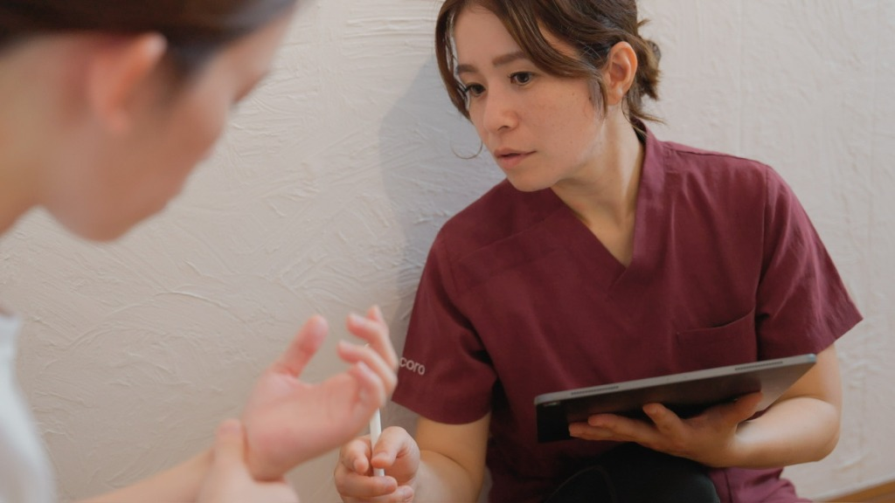
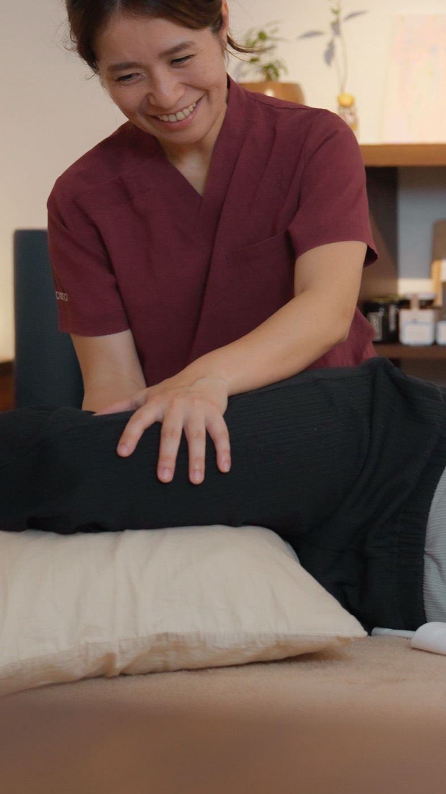
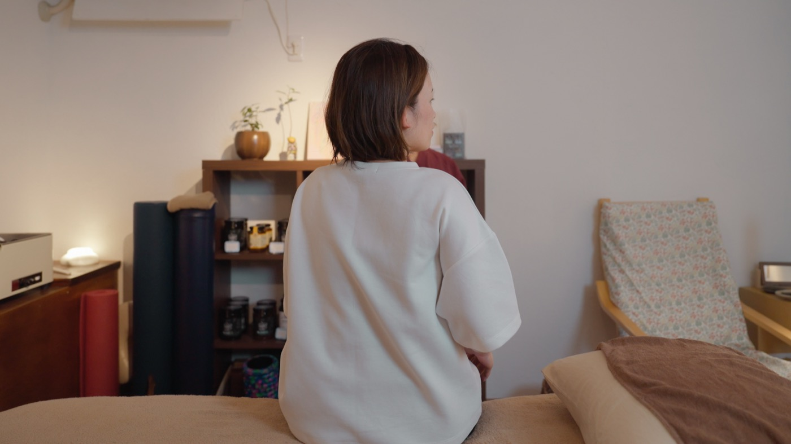
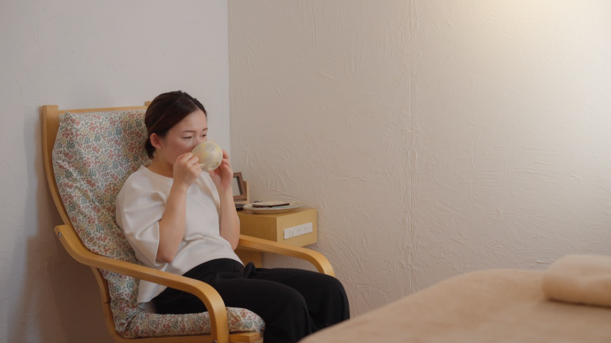
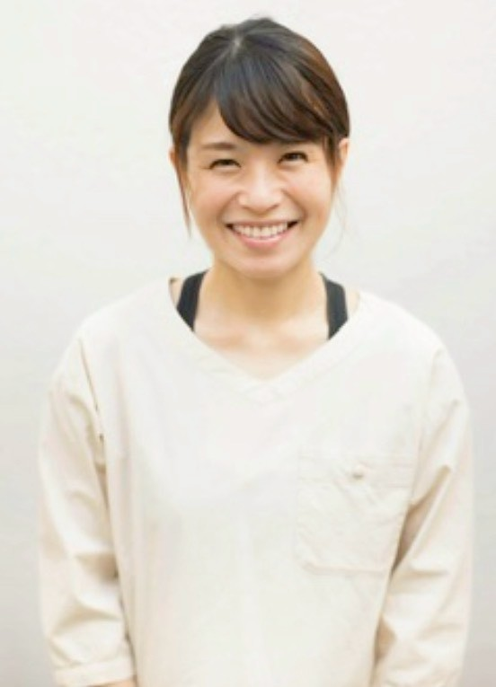

まずは90分。目標をお聞きするところから始めます。
来てくださる方が実際に口にされるのは、症状の名前ではなく、暮らしの中の場面でした。
ゆっくり流れます（指でも動かせます）
その日の痛みを軽くすることはできても、暮らしの場面が変わるには、時間がかかります。3ヶ月というのは、そのための長さです。
「なんとなく良くなった気がする」で終わらせません。体験カウンセリングの日に測って、その後もおなじやり方で測ります。ものさしは2つ。
「いま、どれくらいできていますか」「それに、どれくらい満足していますか」。
決めた目標ごとに、0〜10で一緒に点数化します。国際的に使われている方法（COPM）にならったやり方です。
点数をつけるのは私ではなく、あなた自身です。
例：「抱っこしても腰が痛くならない」→ できている度 3／満足度 2。この数字が3ヶ月でどう動いたかを見ます。
お悩みに合わせて、体のチェックを1〜2個だけ選びます。たくさん測っても続かないので、あなたに関係のあるものに絞ります。あわせて、ここ1週間の疲労感を0〜10で記録します。
そのうえで、施術したその日の変化は、前屈やあぐらで実際に動いて体で確かめてもらいます。数字と、ご自分の感覚と、両方で。
数字が動かない月もあります。そのときも、そのままお伝えします。良く見せるための測り方はしません。
どなたも、まず90分の体験カウンセリングから。そこで測った数字を見ながら、続けるかどうか、どちらのコースにするかを一緒に決めます。表示はすべて税込です。
売り込む場ではありません。あなたが納得して選ぶための材料を、90分で全部そろえる時間です。この日にやることは4つ。
8,500円（税込・計測つき）
コースを始める場合は、この8,500円を初月の料金に全額充当します。体験だけで終わっても、決めた目標と測った記録はそのままお渡しします。
無料にはしていません。ご自分の体に時間とお金を使うと決めた方に、こちらも全力で向き合いたいからです。
同じ90分の施術を単発で受けると、月2回で21,000円です。このコースは月19,900円で、そこに動画とLINEの相談がつきます。
バキバキとならすような施術はしません。動画も、きつい筋トレではありません。次の予約日までのあいだも、ひとりで抱えなくて大丈夫です。
3ヶ月伴走コースの上位です。回数と、こちらが確保する時間の量が変わります。
月 49,800円（税込）× 3ヶ月
総額 149,400円
進む流れは、おひとりずつ違います。最初にお体を見ながら、あなたの流れを一緒に決めます。
毎月ふり返りをして、次の進め方を確かめながら——ときには変えながら——進んでいきます。
毎回の時間は、手でのケアに、必要に応じてやさしい運動を組み合わせます。
下の3つは、いちばん多い流れの一例です。

出産と育児で力が入りっぱなしになった体を、まず緩めます。深く呼吸ができる土台をつくるところから。

足裏の感覚や視線の向きを手がかりに、体の使い方を整えます。立ち方や抱っこの重心も、ここで見直します。

おうちでのセルフケアを生活の中に置いていきます。目指すのは、通い続けることではなく、ご自分で整えられるようになること。
節目ごとに、最初につけた点数と体のチェックを測り直します。3ヶ月後にどれだけ動いたかが、ご自分の目で分かります。

比嘉 夏希（ひが なつき）
作業療法士（国家資格）・3児の母
私自身、沖縄で3人の子どもを育てながら、自分のことを後回しにする毎日を過ごしてきました。
「自分に時間やお金を使っていいのかな」というためらいも、誰かに体を委ねてほっとする時間の尊さも、身をもって知っています。
作業療法士として大事にしてきたのは、その人らしく、やりたいことができる体へサポートすることです。
ゆいどころが目指すのは、通い続けていただくことではなく、笑顔で卒業していただくことです。
体験カウンセリングで測った結果と、ご希望のペースを見てから一緒に決めましょう。
多くの方は3ヶ月伴走コース（月19,900円）です。
期限が決まっていて集中したい方に、短期集中本気コース（月49,800円・定員2名）をご案内しています。
大丈夫です。決めた目標と測った記録はそのままお渡しします。おうちでできることもお伝えしますので、持ち帰って続けていただけます。
コースを始める場合は、8,500円を初月の料金に全額充当します。たとえば3ヶ月伴走コースなら、初月のお支払いは19,900円から8,500円を引いた金額になります。
大丈夫です。動かすにも、順番があります。寝転がったまま視線を動かしたり、足裏の感覚を確かめたりするところから始めて、少しずつ動ける体へサポートしていきます。
お話しいただいて大丈夫です。お腹まわりの使い方や呼吸を整えていくことで、変化を目指していきます。
お腹の締まり具合を測って、始める前と後を比べていきます。
気になる症状がある場合は、産婦人科での受診とあわせてお考えください。
受けられます。産後1ヶ月健診を終えられた頃の方から、お子さんが小学生の方まで来られています。体は何年経ってからでも育て直せます。
完全予約制のプライベートサロンですので、他のお客様を気にする必要はありません。
託児は別途となりますが、ご利用いただけます。お日にちの調整が必要ですので、ご予約のときにお知らせください。
3ヶ月伴走コースは月々19,900円×3回、短期集中本気コースは月々49,800円×3回です。
まとめて一括でお支払いいただくこともできます（総額は変わりません）。体験カウンセリングのあとにご案内します。
お子さんの急な発熱など、予定どおりにいかないことがありますよね。前日までにご連絡いただければ、振替でご案内できます。短期集中本気コースの確約枠は、同じ週の中での振替となります。
ご自分で整えられる状態を目指してお手伝いします。続けることを前提にはしていません。3ヶ月後に測り直した数字を見ながら、そのときに考えましょう。
公式LINEに「目標を決めたい」とひと言ください。日にちの候補をお送りします。
体験カウンセリング8,500円は、コースを始めると初月の料金に全額充当します。